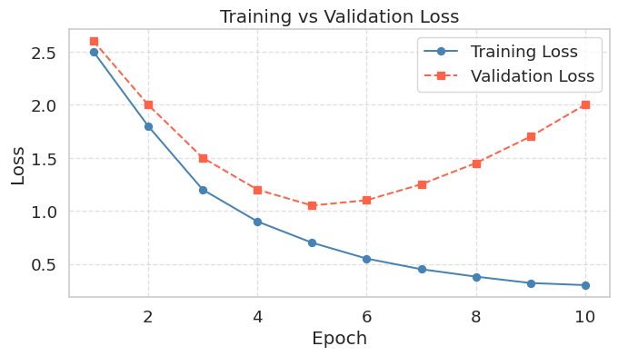
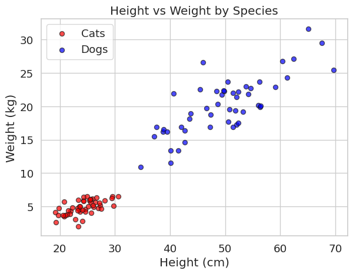
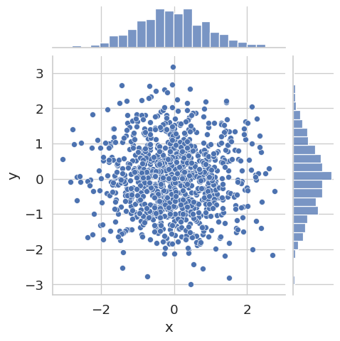
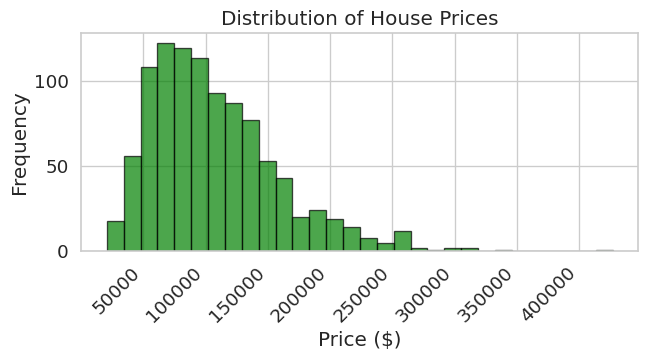
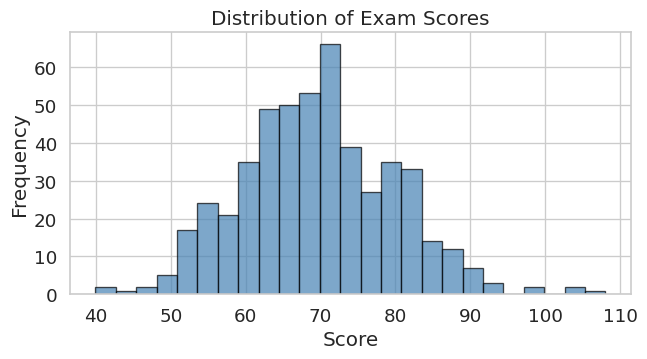
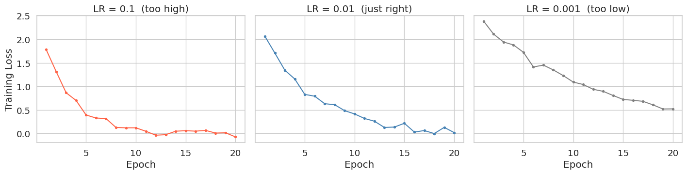

import matplotlib.pyplot as plt
import numpy as np
import seaborn as sns # Higher-level visualization library built on top of Matplotlib
# Apply a clean theme globally to all subsequent Matplotlib figures.
# Seaborn is covered in Further Reading if you want to explore it further.
sns.set_theme(style='whitegrid', font_scale=1.25)Lab1-3. Matplotlib Basics for Machine Learning

Objectives
- Understand the anatomy of a Matplotlib figure: Figures and Axes.
- Basic Plotting: Learn how to create line plots, scatter plots, and histograms.
- Customization: Master adding titles, labels, legends, and adjusting colors to make charts readable.
- Subplots: Learn how to display multiple plots side-by-side, a common task when comparing model metrics.
NoteBasic Concept: Why Matplotlib for Machine Learning?
In Machine Learning, flying blind is dangerous. You need to visualize your data before training a model to spot outliers or distinct clusters. During and after training, you must plot loss curves to diagnose if your model is learning, overfitting, or underfitting. Matplotlib is the foundational plotting library in Python. While libraries like Seaborn offer higher-level wrappers, they are almost all built on top of Matplotlib’s core engine.
0. Setup
1. The Anatomy of a Plot & Basic Line Plots
Before writing code, it is important to understand Matplotlib’s hierarchy:
- Figure: The overall window or page that everything is drawn on. Think of it as the canvas.
- Axes: The actual plot area with x/y coordinates, data, labels, and ticks. A Figure can contain one or more Axes.
- Artist: Everything visible on the Figure — lines, text, ticks — is an Artist.
Knowing this hierarchy is important because the Object-Oriented (OO) API lets you control each level independently, while the older Pyplot API (plt.plot(), plt.title()) modifies whichever Axes is currently active, which becomes unpredictable as soon as you have multiple subplots. Throughout this lab we use the OO API exclusively.
In practice, using the OO API means starting every plot with:
fig, ax = plt.subplots(figsize=(8, 4))fig is the Figure; ax is the Axes. All plot commands go through ax (e.g. ax.plot(), ax.set_title()).

A loss curve is one of the first plots you draw in any ML project. It shows how training and validation loss change across epochs, and is the primary tool for diagnosing overfitting.
epochs = np.arange(1, 11)
train_loss = np.array([2.5, 1.8, 1.2, 0.9, 0.7, 0.55, 0.45, 0.38, 0.32, 0.30])
val_loss = np.array([2.6, 2.0, 1.5, 1.2, 1.05, 1.10, 1.25, 1.45, 1.70, 2.00])
fig, ax = plt.subplots(figsize=(8, 4))
ax.plot(epochs, train_loss, marker='o', linestyle='-', color='steelblue', label='Training Loss')
ax.plot(epochs, val_loss, marker='s', linestyle='--', color='tomato', label='Validation Loss')
ax.set_title("Training vs Validation Loss")
ax.set_xlabel("Epoch")
ax.set_ylabel("Loss")
ax.grid(True, linestyle='--', alpha=0.6)
ax.legend()
plt.show()
When a model overfits, training loss continues to fall while validation loss initially decreases but then rises back up. The lowest point on the validation curve marks the optimal stopping point; anything beyond that and the model is memorizing the training data rather than learning to generalize. Knowing how to read this chart is as important as knowing how to produce it.
2. Scatter Plots (Feature Visualization)
Scatter plots are one of the most important plots in Machine Learning. They allow you to visualize the relationship between two features and see if your classes are easily separable.
np.random.seed(42)
height_cats = np.random.normal(25, 3, 50)
weight_cats = height_cats * 0.2 + np.random.normal(0, 1, 50)
height_dogs = np.random.normal(50, 8, 50)
weight_dogs = height_dogs * 0.4 + np.random.normal(0, 3, 50)
fig, ax = plt.subplots(figsize=(7, 5))
ax.scatter(height_cats, weight_cats, color='red', label='Cats', alpha=0.7, edgecolors='k')
ax.scatter(height_dogs, weight_dogs, color='blue', label='Dogs', alpha=0.7, edgecolors='k')
ax.set_title("Height vs Weight by Species")
ax.set_xlabel("Height (cm)")
ax.set_ylabel("Weight (kg)")
ax.legend()
plt.show()
When you want to examine the relationship between two continuous variables, a joint plot combines a scatter plot in the center with marginal histograms on each axis. The marginal histograms show the individual distribution of each variable, while the scatter plot reveals whether the two variables are correlated.
np.random.seed(0)
N = 1000
x_N = np.random.normal(size=N)
y_N = np.random.normal(size=N)
p = sns.jointplot(x=x_N, y=y_N, kind='scatter', height=5)
p.set_axis_labels(xlabel='x', ylabel='y')
plt.show()
Here x and y are drawn independently from the same normal distribution, so no correlation is visible. Try replacing y_N with y_N = 0.8 * x_N + np.random.normal(scale=0.5, size=N) to see how a strong linear relationship changes the plot.
3. Histograms (Checking Data Distributions)
Machine learning models assume certain distributions in your data. Histograms help you verify if your features are normally distributed or if they are skewed and require normalization.
prices = np.random.lognormal(mean=11.5, sigma=0.5, size=1000)
fig, ax = plt.subplots(figsize=(7, 4))
ax.hist(prices, bins=30, color='green', edgecolor='black', alpha=0.7)
ax.set_title("Distribution of House Prices")
ax.set_xlabel("Price ($)")
ax.set_ylabel("Frequency")
plt.setp(ax.get_xticklabels(), rotation=45, ha='right')
plt.tight_layout()
plt.show()
scores = np.random.normal(loc=70, scale=10, size=500)
fig, ax = plt.subplots(figsize=(7, 4))
ax.hist(scores, bins=25, color='steelblue', edgecolor='black', alpha=0.7)
ax.set_title("Distribution of Exam Scores")
ax.set_xlabel("Score")
ax.set_ylabel("Frequency")
plt.tight_layout()
plt.show()
4. Subplots for Comparing Multiple Metrics
When evaluating models, you rarely look at just one metric. Subplots let you show multiple related charts side-by-side. Using sharey=True keeps the y-axis scale identical across all panels, making it easy to compare magnitudes directly.
The example below shows training loss curves for the same model trained with three different learning rates — a common hyperparameter comparison.
epochs = np.arange(1, 21)
# Simulated training loss for three learning rates
loss_high = 2.5 * np.exp(-0.35 * epochs) + np.random.normal(0, 0.05, 20)
loss_mid = 2.5 * np.exp(-0.20 * epochs) + np.random.normal(0, 0.05, 20)
loss_low = 2.5 * np.exp(-0.08 * epochs) + np.random.normal(0, 0.05, 20)
# We recommend using 'sharey=True' so y-limits are the same across all panels.
# This makes comparing convergence speed across learning rates much easier.
fig, axes = plt.subplots(nrows=1, ncols=3, figsize=(15, 4), sharey=True, sharex=True)
axes[0].plot(epochs, loss_high, color='tomato', marker='o', markersize=3)
axes[0].set_title('LR = 0.1 (too high)')
axes[0].set_xlabel('Epoch')
axes[0].set_ylabel('Training Loss')
axes[1].plot(epochs, loss_mid, color='steelblue', marker='o', markersize=3)
axes[1].set_title('LR = 0.01 (just right)')
axes[1].set_xlabel('Epoch')
axes[2].plot(epochs, loss_low, color='gray', marker='o', markersize=3)
axes[2].set_title('LR = 0.001 (too low)')
axes[2].set_xlabel('Epoch')
plt.tight_layout()
plt.show()
Summary
- Line Plots (
ax.plot): Use these to visualize time-series data or track training/validation metrics over time (Epochs). A rising validation loss despite falling training loss is the visual signature of overfitting. - Scatter Plots (
ax.scatter): Your go-to tool for visualizing feature relationships and class separability in classification tasks. - Histograms (
ax.hist): Essential for checking the distribution of a single variable before feeding it into a model. - Subplots (
plt.subplots): Usesharey=True/sharex=Truewhen comparing the same metric across different configurations (e.g., learning rates, architectures).